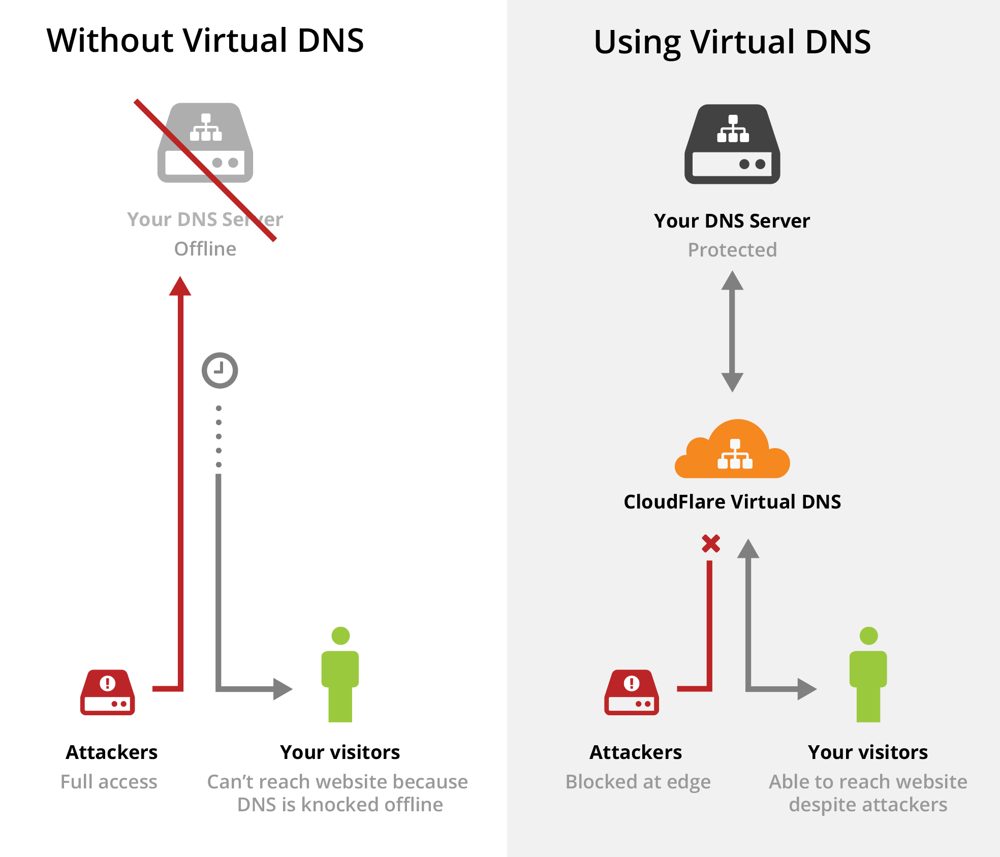
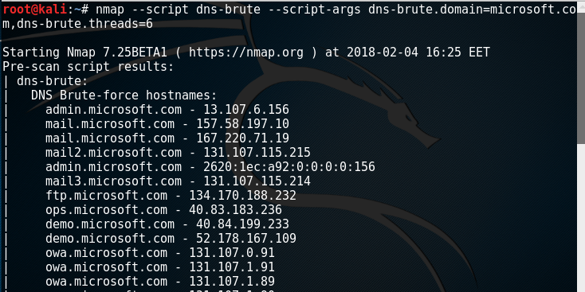
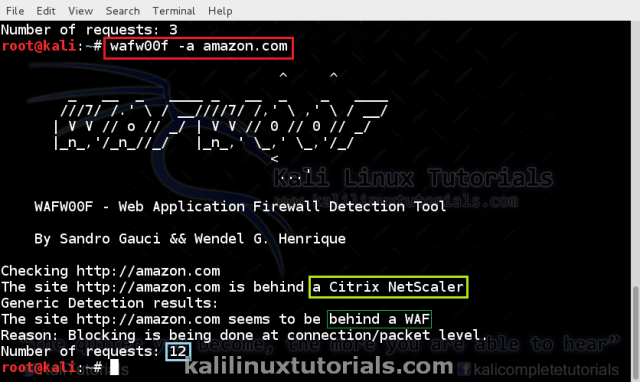
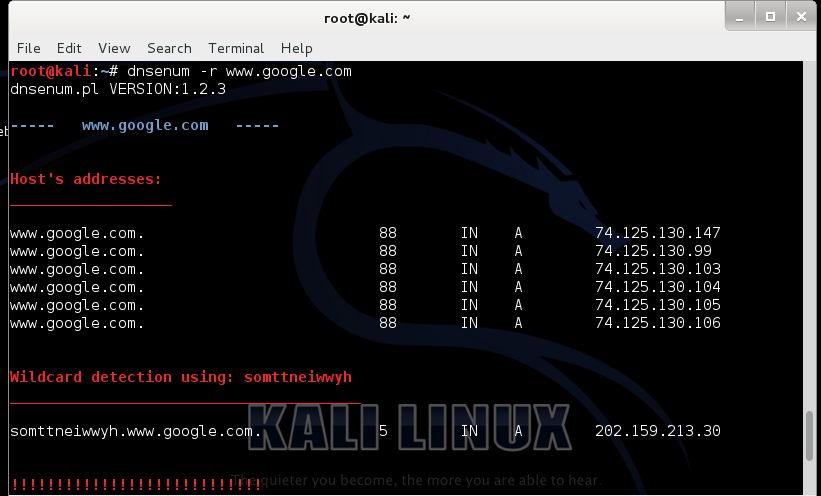
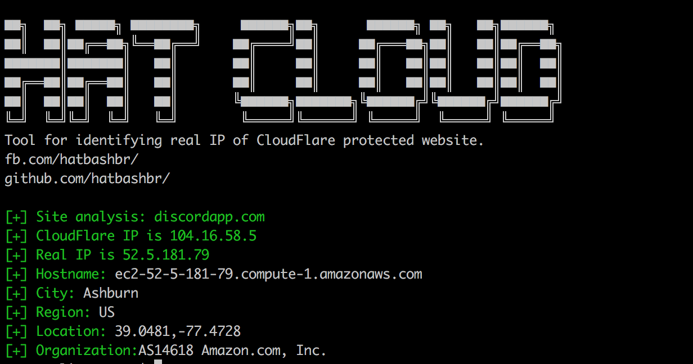
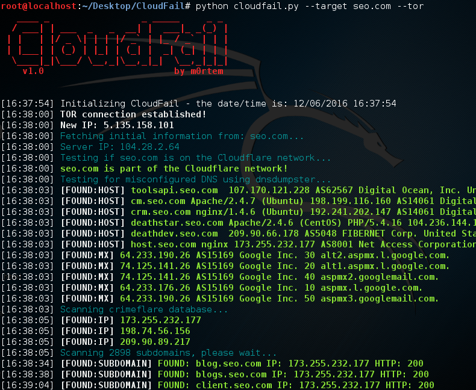

> CloudFlare is kind of WAF.Systems use cloudflare applications in order to hide ip address of name server. Integrates into systems easily.
It works like proxy but there are some differences. Let's see some schemas. In this way we can imagine about how it works.

> As we said, It's like proxy. It is between client and server (out target). Cloudflare prevents the user from communicating directly with the system. For us, Cloudflare can not show by fireWALL. It is more like a translucent curtain. If system uses CF It must be there 2 ip. One of them belong to CF other one is belong to server. We need to server ip.
client =================> Cloudflare ===============> Server (127.0.0.1) (10.10.10.201) (10.10.10.200)
> Most CloudFlare users switch to the CloudFlare system when their business and personal website come into service in a while. But even after they tally on to the CloudFlare system, they keep their site on the same server. Some domain and whois tools record the past actions, which lead to vulnerability. It's possible to access the real IP address of the target site by using the tools -such as DNSTrails and ViewDNS- that show DNS, IP, and HOST information used by the site in the past.
> Some of the webmasters can have websites more than one. While some of the websites are protected with DDos protection technology like CloudFlare, other sites aren't. In the meantime, an owner of the company can keep their website on the same server too. The attackers reach the IP address of the target site is hosted on the same server by searching the server that they know belongs to the owner of the site.

> Although the target site uses CloudFlare DNS for DDos protection, some DNS records (DNS Records) can give the real IP address of the site to the attacker. The most common of these records is the MX, that is, the Mail Server records. Nslookup, DIG etc. about the target site's DNS records. DNS dump can be obtained with whois tools as well as information can be obtained with DNS Information Gathering tools such as DNS Information Gathering. Thus, even if the NS records are directed to the CloudFlare server, the IP address of the real server hosting the site will be revealed in the MX records. There are some stolen infos from CF. You can use these sites in order to reach ip.
https://iphostinfo.com/cloudflare/
https://cloudresolve.net/
http://dnstree.com
http://skypegrab.net/cf.php
> Since Cloudflare software only covers the main domain in some cases, the ip addresses of the subdomains may be the result we are looking for. We can send requests and we can see ip adresses of sub-domains.
> If that's doesn't work you can use some scripts. First I want to talk about how to these programs works. Let's write a python script.
> As you can see we got 302 requests statu code four times. It's possible to there is CF. The requests we sent may have gone between cloudflare and the server.That is main algorithm. Let's see other programs.





https://github.com
https://www.hackingloops.com
https://tools.kali.org
https://null-byte.wonderhowto.com
I would like to thank my friend Işıl for her contribution in the translation of the article.
> As we said, It's like proxy. It is between client and server (out target). Cloudflare prevents the user from communicating directly with the system. For us, Cloudflare can not show by fireWALL. It is more like a translucent curtain. If system uses CF It must be there 2 ip. One of them belong to CF other one is belong to server. We need to server ip.
client =================> Cloudflare ===============> Server (127.0.0.1) (10.10.10.201) (10.10.10.200)
> Most CloudFlare users switch to the CloudFlare system when their business and personal website come into service in a while. But even after they tally on to the CloudFlare system, they keep their site on the same server. Some domain and whois tools record the past actions, which lead to vulnerability. It's possible to access the real IP address of the target site by using the tools -such as DNSTrails and ViewDNS- that show DNS, IP, and HOST information used by the site in the past.
> Some of the webmasters can have websites more than one. While some of the websites are protected with DDos protection technology like CloudFlare, other sites aren't. In the meantime, an owner of the company can keep their website on the same server too. The attackers reach the IP address of the target site is hosted on the same server by searching the server that they know belongs to the owner of the site.
> Although the target site uses CloudFlare DNS for DDos protection, some DNS records (DNS Records) can give the real IP address of the site to the attacker. The most common of these records is the MX, that is, the Mail Server records. Nslookup, DIG etc. about the target site's DNS records. DNS dump can be obtained with whois tools as well as information can be obtained with DNS Information Gathering tools such as DNS Information Gathering. Thus, even if the NS records are directed to the CloudFlare server, the IP address of the real server hosting the site will be revealed in the MX records. There are some stolen infos from CF. You can use these sites in order to reach ip.
> Since Cloudflare software only covers the main domain in some cases, the ip addresses of the subdomains may be the result we are looking for. We can send requests and we can see ip adresses of sub-domains.
ping ftp.site.com ping webmail.site.com ping blog.site.com ping forum.site.com ping driect-connect.site.com ping vb.site.com ping cpanel.site.com ping forums.site.com ping home.site.com ping shop.site.com ping blogs.site.com ping direct-connect.site.com ping direct.site.com ping ftp.site.com ping cpanel.site.com ping mail.site.com
> If that's doesn't work you can use some scripts. First I want to talk about how to these programs works. Let's write a python script.
#-*- coding: utf-8 import requests url="https://capitansec.github.io" r = requests.get(url) print(r.history) >> [Response 302, Response [302], Response [302], Response [302]]
> As you can see we got 302 requests statu code four times. It's possible to there is CF. The requests we sent may have gone between cloudflare and the server.That is main algorithm. Let's see other programs.
Nmap
> Nmap is an information gathering tool with multi functions. We generally use nmap for port scanning. Let's see how to use for dns enumarete.nmap --script dns-brute -sn xxxx.com
Wafw00f
> Wafw00f is a popular Python program that takes the guesswork of fingerprinting a website's firewall off your hands. Based on the responses to a series of carefully crafted web requests, Wafw00f can determine the underlying firewall used by a service that it probes.This program already setup in kali linux. open a terminal and run "wafw00f".Dnsenum
> DNSEnum is a command-line tool that automatically identifies basic DNS records such as MX, mail exchange servers, NS, domain name servers, or A—the address record for a domain.dnsenum --enum xxx.com
Dnsmap
> DNSMAP, as the name suggests, is DNS Network Mapper, which is used for multiple purposes. Basically, DNSMAP is an passive Network Mapper, often called a sub domain brute force tool. This tool is mainly used by penetration testers and hackers for DNS and sub domain information gathering.dnsmap xx.com
Webspoloit
> Websploit is an open-source framework used for testing web apps and networks. It is written in Python and uses modules to perform various activities such as directory scanning, man-in-the-middles, and wireless attacks.websploit use web/cloudflare_resolver set target xxx.com run
CloudFlareBypass
> CloudFlareBypass is a python script. For more info, you can visit github repo.git clone https://github.com/cihanmehmet/cloudflarebypass.git cd cloudflarebypass python cloulflarebypass.py ./cloulflarebypass.py bash dnsresolver.sh ./dnsresolver.sh
Hatcloud
> Hatcloud is a ruby script. For more info, you can visit github repo.git clone https://github.com/HatBashBR/HatCloud.git cd HatCloud sudo chmod +x hatcloud.rb ruby hatcloud.rb -b xxx.com ruby hatcloud.rb --byp xxx.com
CloudFail
> CloudFail is a tactical reconnaissance tool which aims to gather enough information about a target protected by Cloudflare in the hopes of discovering the location of the server. Using Tor to mask all requests, the tool as of right now has 3 different attack phases.git clone https://github.com/m0rtem/CloudFail.git python cloudfail.py --target xxx.com service tor start python cloudfail.py --target xxx.com --tor
References
I would like to thank my friend Işıl for her contribution in the translation of the article.